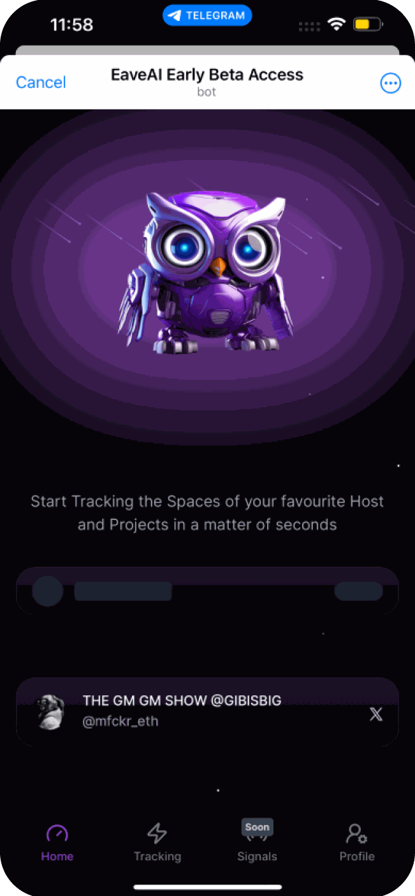
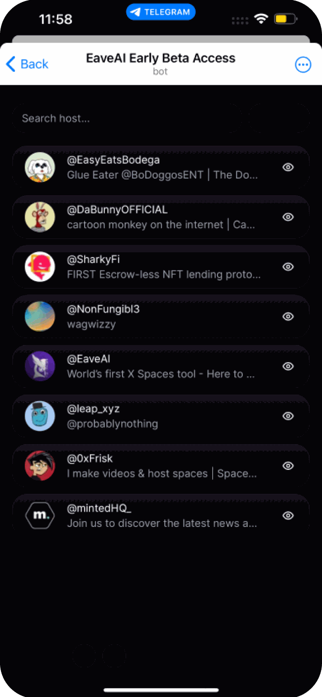
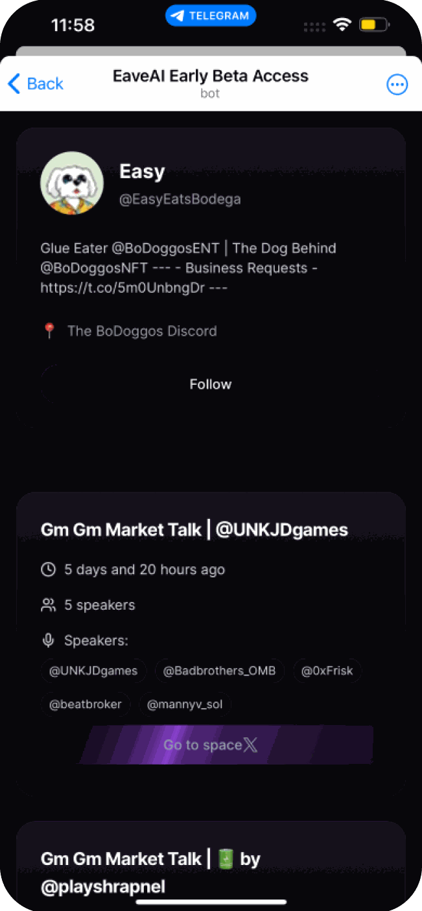
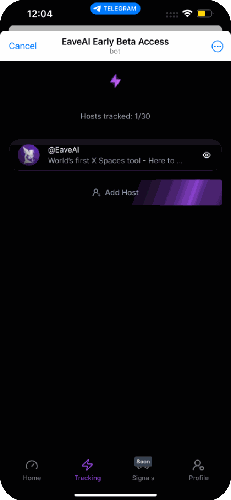
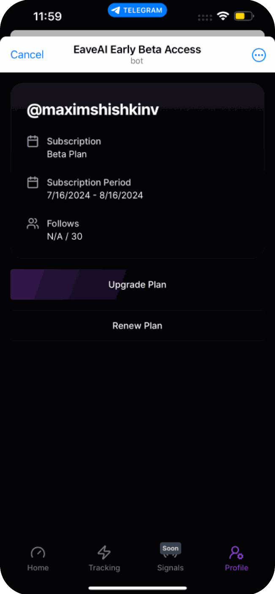
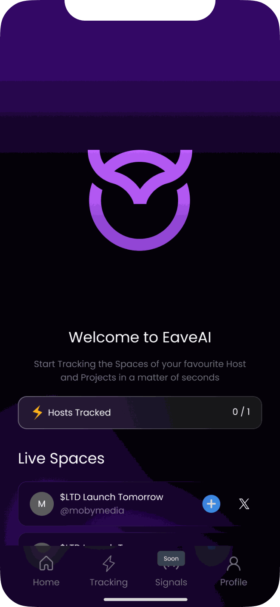
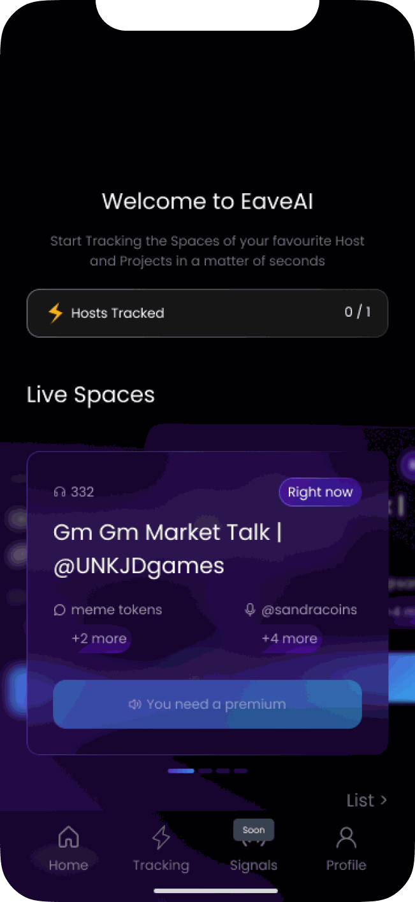
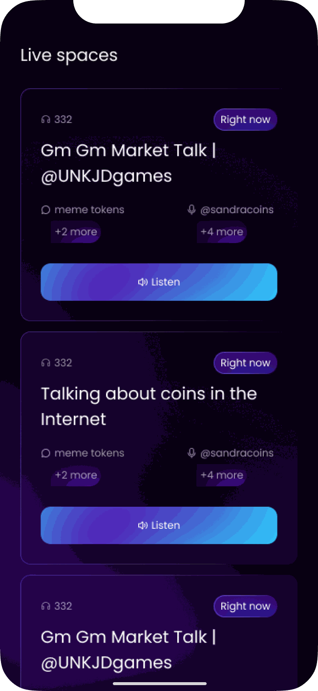
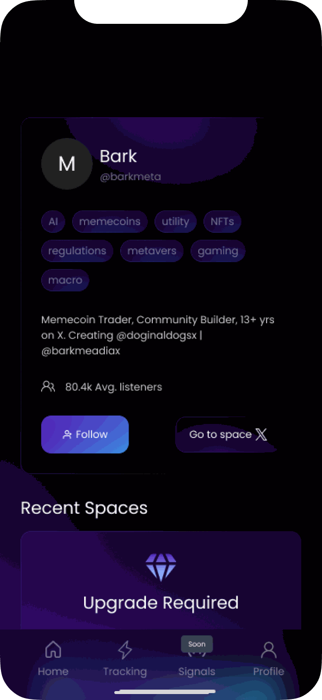
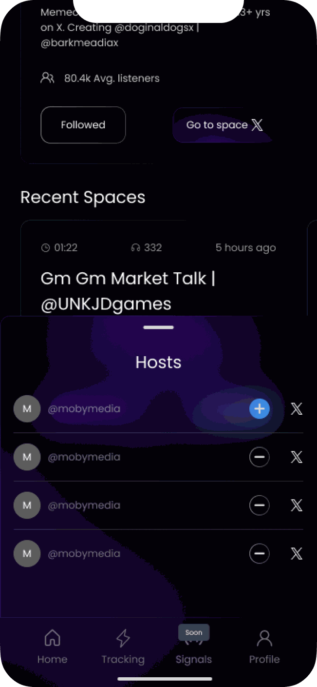

EaveAI · Freelance · 2025EaveAI · фриланс · 2025
EaveAI tracks Spaces – live audio rooms on X, mostly about crypto – and tells you when the hosts you follow go live. The beta was a bare bot: a list of handles, a counter and a plan page. I redesigned the mini app so people can find a Space worth joining and understand what the paid plan gives them
EaveAI следит за Spaces – аудиокомнатами в X, чаще всего про крипту – и подсказывает, когда выходят в эфир хосты, на которых ты подписан. Бета была голым ботом: список ников, счётчик и страница тарифа. Я переделала мини-приложение, чтобы в нём было легко найти Space, в который стоит зайти, и понять, что даёт платный тариф
Before
До
The beta was hard to find your way around: no filtering, a weak hierarchy where every row looked the same, and a subscription page that didn't say what you pay for. To see what a host talks about you had to open them one by one
В бете было сложно сориентироваться: ни фильтров, ни внятной иерархии – все строки выглядели одинаково, а страница подписки не объясняла, за что платишь. Чтобы понять, о чём говорит хост, приходилось открывать всех по очереди





Solution
Решение
The home screen opens with the Spaces live right now: title, host, topics and number of listeners, and a Listen button on each card. The tracked hosts counter is one line at the top
Главная начинается с Spaces, которые идут прямо сейчас: название, хост, темы, число слушателей и кнопка «Слушать» на каждой карточке. Счётчик отслеживаемых хостов – одна строка наверху
A host profile shows topic tags, a short bio and average listeners, with Follow and Go to space side by side. A new filter helps find Spaces on the topics you care about
В профиле хоста – теги тем, короткое описание и среднее число слушателей, а рядом кнопки «Подписаться» и «Перейти в Space». А новый фильтр помогает найти Spaces на нужную тему
The upgrade shows up on the content itself: a locked Space says "You need a premium", and past Spaces sit behind "Upgrade required". The plans spell out how many hosts you can track and what's inside, and you can pay in ETH or unlock access by holding $EAVE tokens
Предложение подписки появляется прямо на контенте: у закрытого Space написано «Нужен премиум», а прошедшие Spaces – за плашкой «Нужен апгрейд». В тарифах расписано, сколько хостов можно отслеживать и что внутри, а оплатить можно в ETH или получить доступ, держа токены $EAVE




